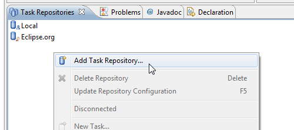
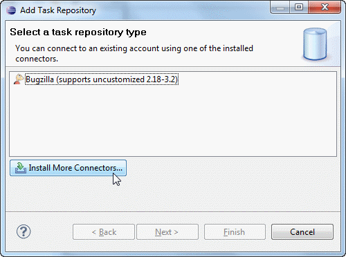
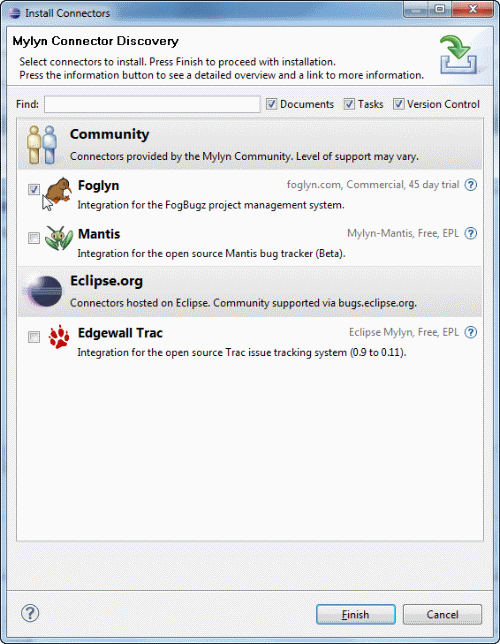

Installing Foglyn with Connector Discovery
Connector Discovery is new feature in Mylyn 3.2 that helps users easily find connectors for their repositories.
Connector Discovery is available from Add Task Repository dialog. You can activate this dialog by choosing "Add Task Repository..." item from context menu of Task Repositories view.

To activate Connector Discovery feature, press "Install More Connectors..." button.

Mylyn will download list of available connectors, and check their availability. Connectors that are not available will be greyed. From here, you can select Foglyn or any other connector. Press Finish button to install connectors you have selected.
